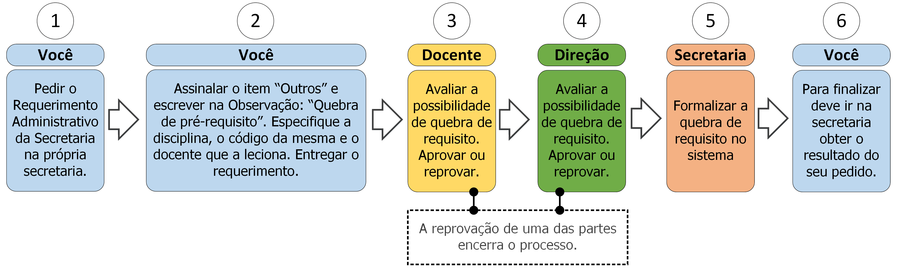

15.4 Quebra de pré-requisitos

15.4.1 Descrição
É possível cursar uma disciplina que tenha outra como pré-requisito, mas que você não tenha cursado esta outra. Para isso deve seguir os seguintes passos:
- A. Peça o Requerimento Administrativo da Secretaria;
- B. Assinale o item “Outros” e preencha no campo Observação: “Quebra de pré-requisitos”, o nome da disciplina que deseja incluir, seu código e o docente que a leciona;
- C. Entregue o requerimento;
- D. O docente avaliará seu pedido de quebra de pré-requisito, caso reprove o processo será encerrado;
- E. A direção avaliará seu pedido de quebra de pré-requisito, caso reprove o processo será encerrado;
- F. Vá à secretaria e procure saber sobre o resultado do seu requerimento (ver regra 1 na seção 15.4.3).
15.4.2 Documentos necessários
Nenhum.
15.4.3 Regras
- 1. Prazo de efetivação: A Secretaria, a direção e o corpo docente têm até 7 dias úteis para efetivar a quebra de pré-requisitos.